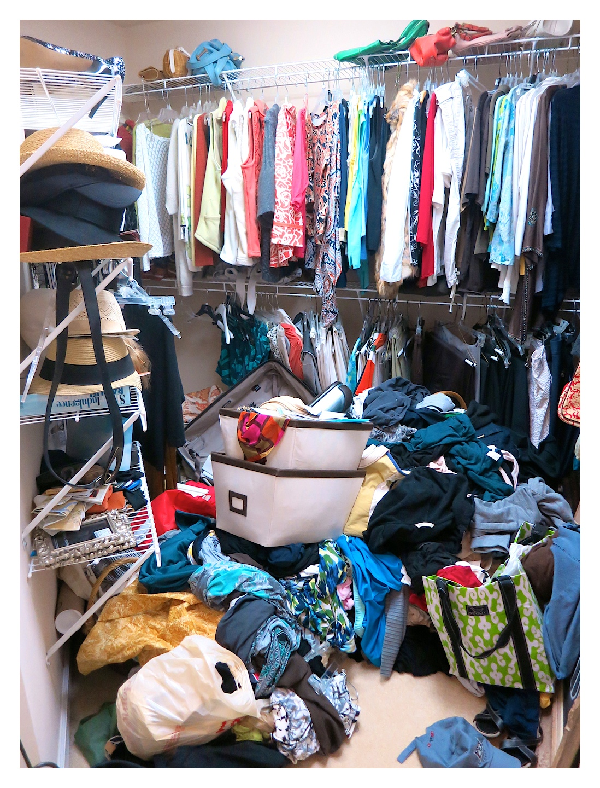

Time pressure is quite common software projects, and a common solution to it is hiring more developers. And we know that doesn’t always translate into success, because of issues with being able to parallelize work.
Let’s use an analogy: construction work. If you are a construction company that builds houses, you can absolutely scale up and have multiple teams work on different residential units. But this is not the case, when it comes to building something like a skyscraper. A skyscraper construction project that famously achieved the feat of building one story per day is the Empire State Building. Its construction, completed in 1931, was a marvel of engineering and organization, employing innovative techniques and a dedicated workforce.
This rapid pace was achieved through several factors:
- Pre-fabricated steelwork: most of the steel components were pre-fabricated off-site, allowing for faster assembly on-site.
- Multiple construction crews: multiple crews worked simultaneously on different floors, significantly speeding up the process.
- Nighttime construction: construction continued even at night, utilizing powerful floodlights to illuminate the work area.
Even with these techniques, it would still not have been possible to go faster than that because you cannot build the structure of the new floor before the structure of the previous floor was in place.
The interesting thing about software development is that you actually can work on stuff before having the underlying foundation properly set up, but it doesn’t mean you should. It is commonly understood that adding more developers to a late project doesn’t solve the problem. What’s discussed less is the danger of ramping up a project too soon.
You Need A Solid Foundation
What constitutes the foundation of an application?
- The layers and folder structure including setting up data access, dependency injection etc.
- Configuration.
- Instrumentation / logging.
- Authentication.
- Creating a design system for the frontend.
- Setting up application state and access patterns.
- Localization.
- Linting.
Changing / understanding / maintaining code is a lot harder than creating new code. When you are working on large code bases with technical debt, you see a lot of different patterns.
- Some portions of the backend might use Kendo UI, for example.
- Other portions might use MUI.
- Others use native HTML / CSS.
- Some parts of the backend could hit the database directly.
- Other parts might use an ORM.
Not only is it jarring for the user from a UX perspective, but it’s also confusing for developers joining the team.
Changing Code Implies Significant Cognitive Load
In computer programming, cognitive load refers to the mental effort required to understand, process, and manipulate information while coding. It essentially reflects the strain placed on your brain during various programming activities. In a nutshell, this theory is based on the fact that our working memory’s capacity isn’t great. We can only hold so many chunks of information at once. That means that if your cognitive load is high, or in other words, if you’re trying to juggle too many bits of information at the same time, your performance at the task you’re supposed to do will suffer, greatly.
On average, changing code is considered seven times harder than writing new code.
The primary reason why modifying code is harder, is you need to keep track not only of the code you’re changing, but how this code fits with other code throughout the app. And as the app gets bigger, it becomes this really complicated mesh of relationships that you need to keep track.

Think about it this way: if you have N components and each comunicationes with each (which is a a lot), you will have N^2 dependencies. This is not necessarily realistic, but you get the picture. Existing code will already be connected to existing parts and changing it will require changing other parts.
Architecture Is A Lot About Patterns
There’s a lot of debating around the merits of various architectures, like MVC versus minimal APIs, Clean Architecture versus regular n-tier, etc., but I think one aspect that gets brought up less is the fact that they are about enforcing consistent patterns in the application. As a developer, it is important to be able to understand and find code easily. Ideally, you want to be able to be able to understand the code by reading it, without having to debug. True, the fact that these patterns enforce high cohesion and low coupling also helps.
To me, architecture is also about mental models and compartimentalization. Let’s use the analogy of a messy closet.
If you have a messy closet, you there’s a tendency for it to become even more messy, because you will just through things on top of the existing pile. Code is the same, messy code begets more messy code. So regardless what architectural approach, clean and mantainable code is about cohesion and coupling. The main problem with not starting out with a clear structure is that structure because even more messy over time. An initial messy structure creates a snowball effect.
So make sure you are starting from a good point.